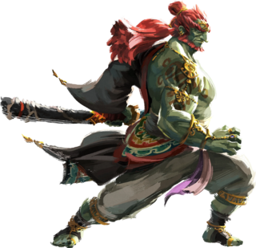

Personajes

Link
Link (リンク, Rinku) es el nombre del protagonista de The Legend of Zelda. Es el Héroe Elegido por las Diosas, portador de la Espada Maestra y representante de la Trifuerza del Valor. Una vez iniciada su aventura, Link se convierte en un héroe legendario después de salvar a Hyrule de las fuerzas malignas ocasionadas por Ganon (también conocido como Ganondorf). En gran parte de su viaje, consigue distintas armas y objetos con los que logra enfrentarse a sus enemigos, además de también ayudarle a completar las diversas mazmorras que visita. Además de la guía de las Diosas, Link también suele encontrarse con distintos aliados, quienes luego le acompañan hasta el final del viaje; la más reconocida siendo Navi en The Legend of Zelda: Ocarina of Time. En otras ocasiones, Link también recibe ayuda de la Princesa Zelda, quien posteriormente se vuelve también su aliada con el mismo objetivo de defender Hyrule.

Zelda
La Princesa Zelda (ゼルダ姫, Zeruda-hime) es un personaje principal de la saga de videojuegos de The Legend of Zelda. Es la princesa descendiente de la Familia Real de Hyrule. Zelda porta la Trifuerza de la Sabiduría, imbuida con la esencia de la Diosa Nayru que le permite discernir las decisiones más sabias, especialmente en situaciones relativas al bienestar de Hyrule. Junto al héroe elegido por las Diosas, Link, Zelda trabaja con él para detener las fuerzas malignas que perjudican a su reino. A menudo, su adversario principal son las distintas encarnaciones de Ganondorf, el portador de la Trifuerza del Poder.

Ganondorf
Ganondorf (ガノンドロフ, Ganondorofu) también conocido como el Rey Demonio o Señor de la Oscuridad, es el antagonista principal de la mayoría de los juegos de la saga The Legend of Zelda. Es un miembro de las Gerudo, como el miembro masculino que solo nace cada cien años, Ganondorf logra convertirse en el rey de las Gerudo o Guardián del Desierto, dependiendo del juego. Dotado de una poderosa magia, Ganondorf a menudo busca la omnipotente Trifuerza para concederle su deseo de conquistar Hyrule. Él es el responsable de la mayoría de los golpes de estado a los diferentes gobiernos de la Familia Real de Hyrule para tomar el trono.